Project Overview
Designing for a sun
that will not wait
Solace was a single day gathering on a hilltop property in Alpine, California. Guests arrived in full afternoon sun, moved through a seated circle at golden hour, and ended the night in darkness with the valley lit below. Because the pavilion is open on all four sides, the light inside it changes completely over seven hours. Designing Solace meant treating afternoon, dusk and dark as three distinct rooms that happen to share one floor.
Hard overhead sun and open views. Design reads as texture and color.
Side light through the arches. The circle forms around the center mandala.
Candlelight, string lights and the valley below. Sound carries the room.
Arrival
Guests come up through old oaks and arrive from below, with the pavilion backlit and the valley opening behind it. Nothing was added here. The work was routing people through it.
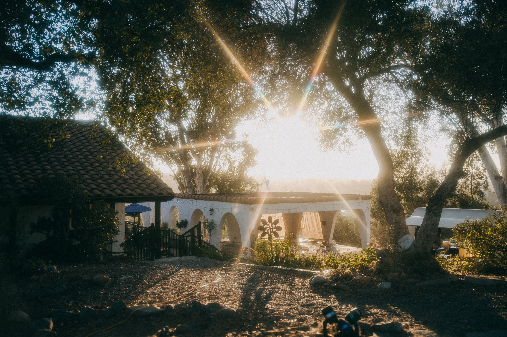
The approach · Alpine, California
The Container
Layered rugs and sheepskins define where the circle sits without a single sign. The arches frame the valley on three sides and were left completely clear.
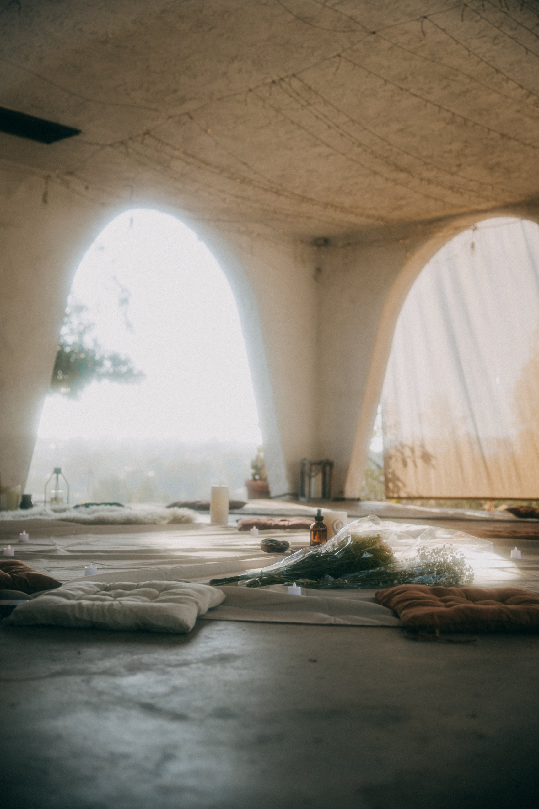
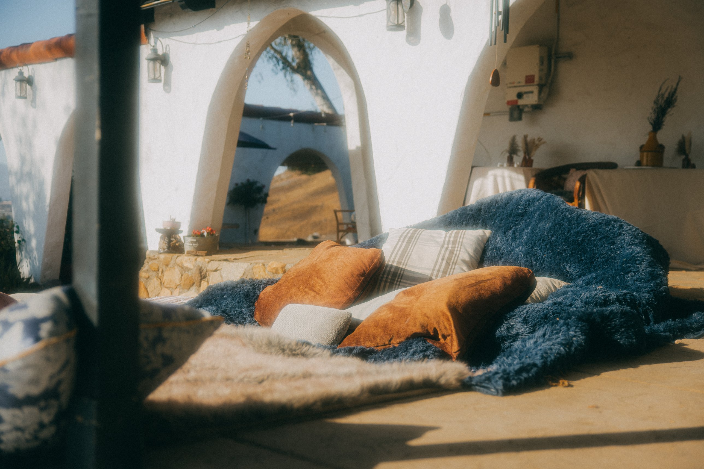
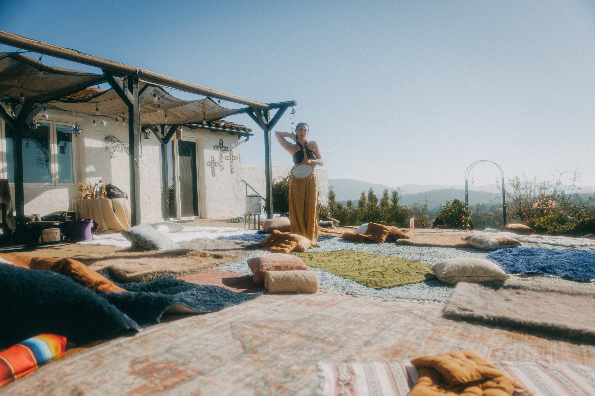
The floor, set and empty · before guests
Hospitality
A restrained welcome table inside the cool of the white interior. Coffee service stayed outside the pavilion so the designed floor was never disturbed.
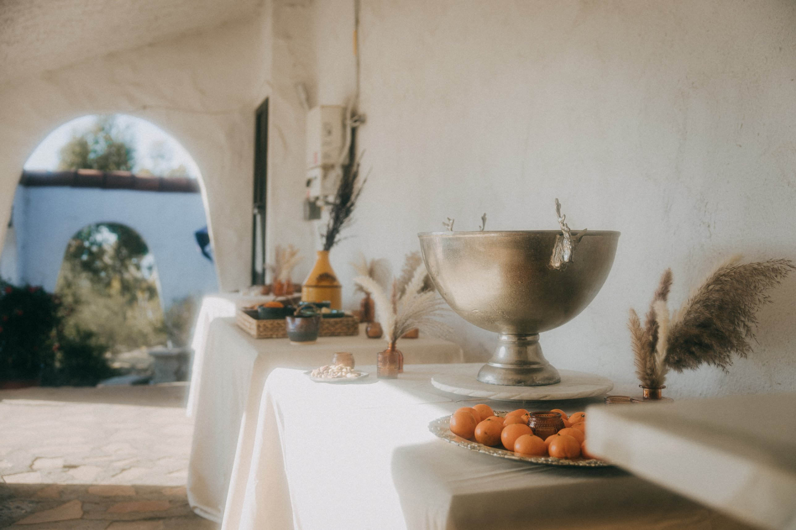
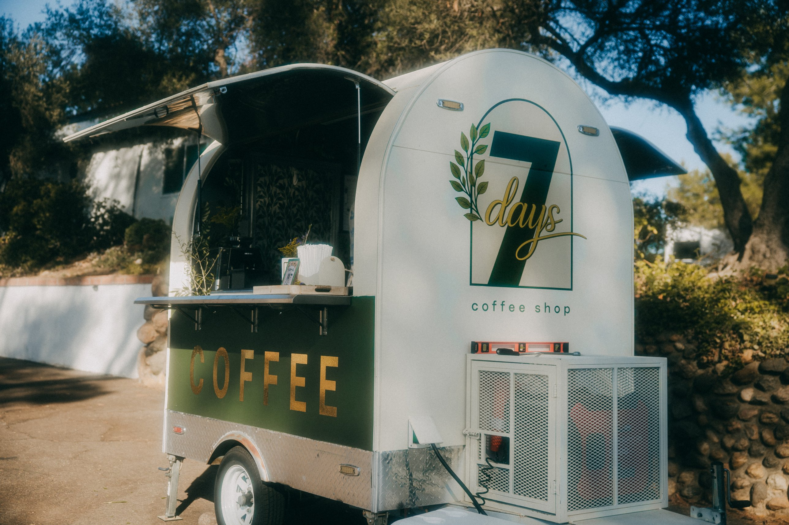
Welcome table and on-site service
The Circle
The center mandala was built hours earlier and sat almost unseen through the afternoon. As the sun drops it becomes the brightest thing on the floor.
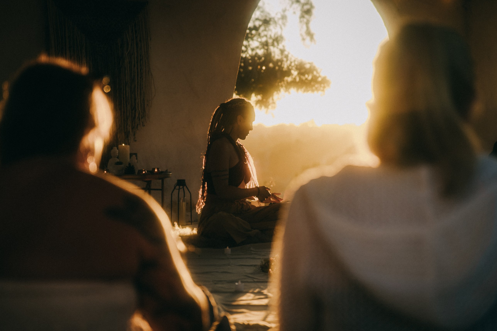
Golden hour · the circle
The design does not announce the transition. The light does.
The Land
The property keeps horses a short walk from the pavilion. Built into the day as open, unstructured time before the evening asks everyone to sit still.
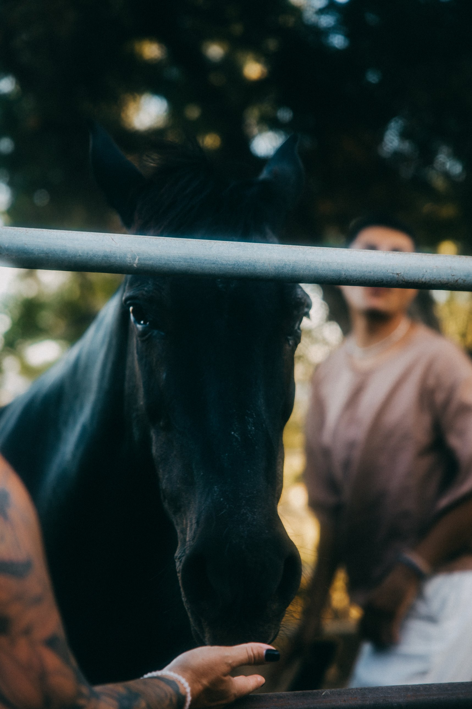
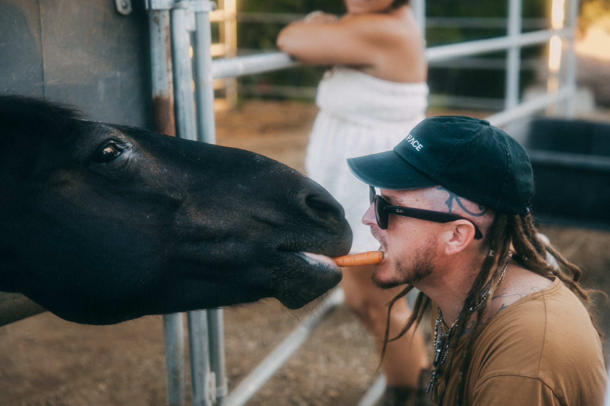
The paddock · open interval
The Sound Journey
Bowls were placed and tuned in daylight so nothing crossed the floor once the room had settled. The session runs from blue hour into full dark.
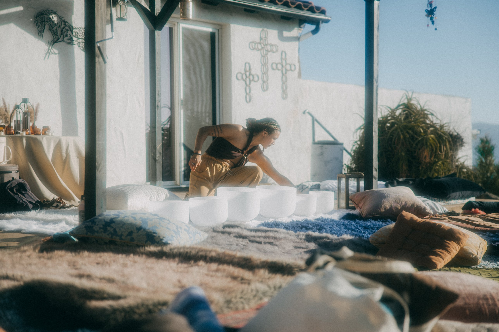
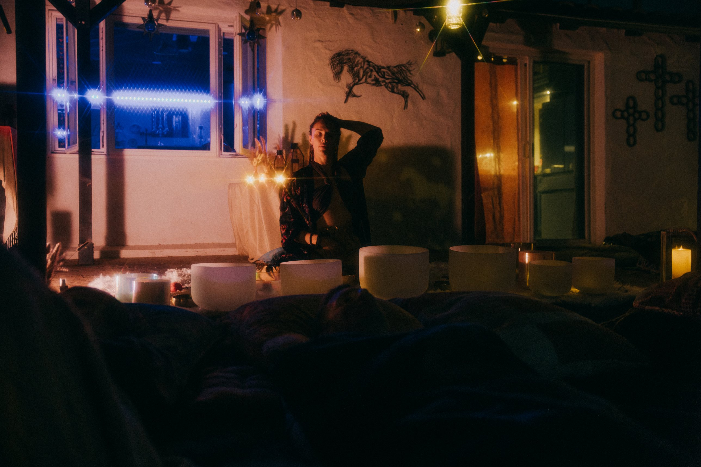
Daylight placement · blue hour · full dark
Close of Day
The floor that had been a circle becomes a place to lie down. Nothing is cleared while guests are still in the room.
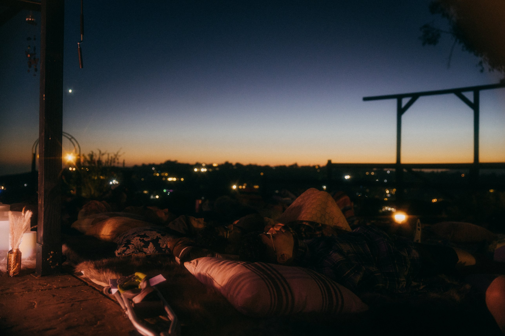
Close of day · the valley below
Design POV
An open room is a
timing problem
Indoors you control the light, so you control the pace. Under a structure with four open sides, the light controls you, and it moves whether or not the day is ready.
Most of the work on Solace happened before anyone arrived. Deciding what each element would look like in three different light conditions, then placing it once so it never had to be touched again.
Credits